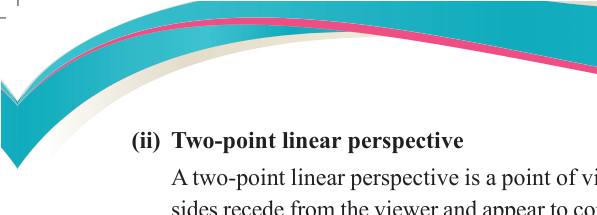
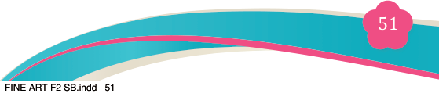
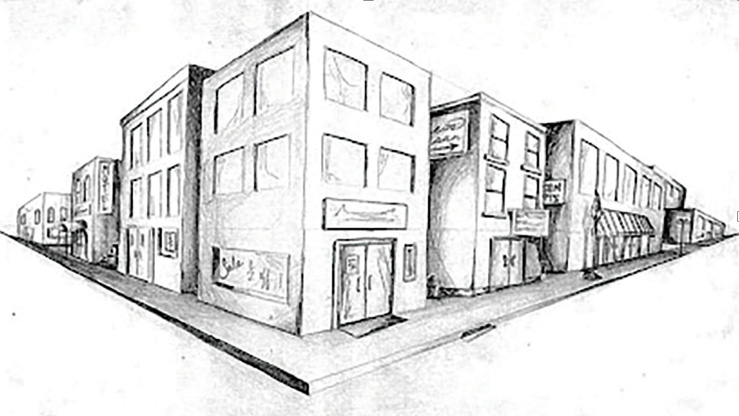
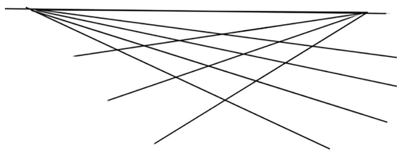
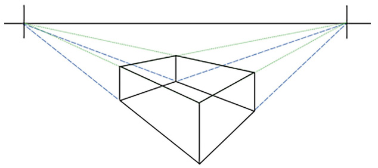

Fine Art for Secondary Schools

51


Student’s Book Form Two
(ii) Two-point linear perspective

A two-point linear perspective is a point of view in which two sets of parallel
sides recede from the viewer and appear to converge at two separate vanishing
points on the horizon line. Artists use this type of linear perspective when two
sides recede into distance in two different vanishing points.

Figure 3.21: Two-point linear perspective
Steps for drawing a 2-point linear perspective
The following are guiding steps to draw a box in two- point linear perspective
as shown in Figure 3.22 (a-d).
Step 1

(a): Horizon line, two varnishing points and two sets of orthogonal on the space.
Step 2

(b): Using the two sets of orthogonal to draw a box
04/08/2025 13:54